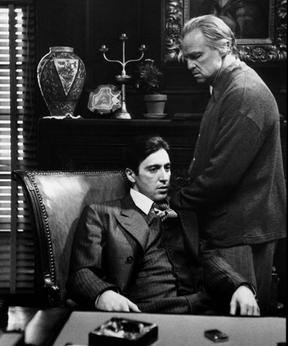

The Godfather, Still (Al Pacino and Marlon Brando)
Francis Ford Coppola · 1972 · Film still, colour
In copyright. Look and learn: shown for study, not for download.
Paramount resisted casting Marlon Brando as Vito Corleone and required a screen test. Francis Ford Coppola, not wanting to offend him, said he needed to test equipment and filmed it at Brando's house in California, where Brando put cotton balls in his cheeks and shoe polish in his hair and rolled his collar. Coppola had taken the job partly because his studio, American Zoetrope, owed Warner Bros. more than $400,000. The film was shot in and around New York City and in Sicily, and finished ahead of schedule.